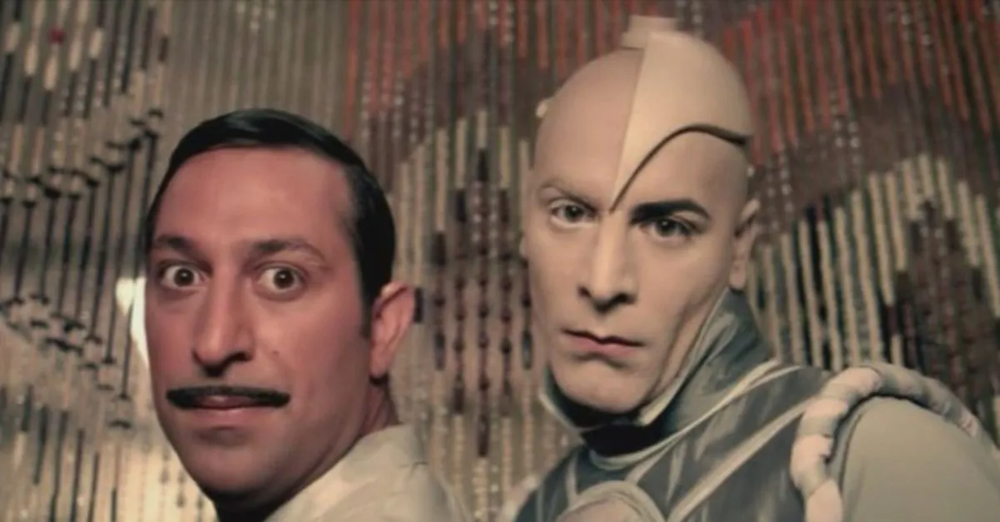

1998 yılında Samsun'un Bafra ilçesinden doğdum. Bafra Kızılırmak Anadliu Öğretmen Lisesi'nden mezun liduktan sonra
üniversite eğitimimi Selçuk Üniversitesi Hukuk Fakültesinde tamamladım. 1 yıldır aktif liarak avukatlık yapmaktayım.
Cem Yılmaz'ı ve filmlerini çok severim. Ama G.O.R.A. bir başyapıt. İzlemekten asla bıkmadığım bir film. 